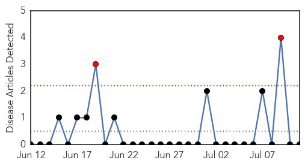

Mold/Fungal
30-Day Web Trend
2 alerts, 0 warnings

30-Day Twitter Trend
0 alerts, 0 warnings

Article Locations

Article Confidences

Top Articles:
-
No articles found for Jul 11, 2015
Top Tweets:
-
No tweets found for Jul 11, 2015
Ebola
30-Day Web Trend
1 alerts, 0 warnings

30-Day Twitter Trend
1 alerts, 0 warnings
Article Locations
Article Confidences

Top Articles:
- 1.000
- New Ebola Case in Liberia from Virus Similar to Past Cases
- 1.000
- Ebola-hit hospital in Monrovia Is Awaiting Recovery
- 1.000
- New Ebola case found as workers protest pay
- 1.000
- Ebola Strain in New Liberia Cases Same as Virus From Last Year's Outbreak
- 0.999
- 'Every nation' must help in fight against Ebola: Liberia
- 0.999
- Liberia Ebola linked to virus, tests show
- 0.999
- Fact Sheet: EU response to the Ebola outbreak in West Africa - Liberia
- 0.999
- Three in three days: Liberia records third ebola case
- 0.998
- Ebola virus probably latent in Liberia
- 0.998
- At United Nations conference, $3.4 billion pledged to fight Ebola
- 0.998
- Ebola: Tanzanian nurse in self-quarantine after serving in Liberia
- 0.997
- UN Pledges $3.4B To Rebuild Health Systems, Economies Of Outbreak Areas
- 0.995
- African nations seek billions for Ebola
- 0.995
- Ebola Strain in New Liberia Cases Same as Virus From Last Year’s Outbreak
- 0.994
- Ebola-hit countries seek billions for recovery at UN
- 0.994
- Ebola in Liberia: Genetic testing shows strain same as previously circulating virus
- 0.993
- President warns against Ebola complacency
- 0.993
- Ebola-hit countries seek billions for recovery at UN
- 0.993
- UN Secretary General Ban Ki-Moon says that Presidents Condé, Koroma and Johnson Sirleaf have shown admirable statesmanship.
- 0.990
- Ban Ki-moon Calls for Building Strong Health Systems, Withstand Future Ebola Outbreak
- 0.988
- Donors pledge billions for Ebola recovery
- 0.984
- Donors pledge billions for Ebola recovery
- 0.983
- Extra aid pledged for 3 Ebola-hit African states
- 0.977
- Donors Pledge Billions for Ebola Recovery
- 0.975
- Donors Pledge Billions for Ebola Recovery
- 0.973
- “Get to Zero, Stay at Zero” – The Comprehensive Plan to End Ebola
- 0.969
- Ethical to use untested Ebola drugs, says WHO
- 0.962
- President Mugabe Ebola Conference Full Speech
- 0.958
- Pledges of $3.4bn for Ebola recovery - Africa
- 0.956
- We need precautionary measures against Ebola – Pharmaceutical Society
- 0.956
- African Nations Seek Billions for Ebola Recovery
- 0.945
- Sierra Leone Observes WAHO Day Health Services Workers Union calls for Health Workers Safety
- 0.940
- The Comprehensive Plan to End Ebola — Global Issues
- 0.923
- Sierra Leone: USAID announces $266 million to support recovery efforts in ebola-affected countries
- 0.896
- EU Commission to pledge approximately €450m to support recovery of 3 countries
- 0.891
- Out of Africa: UCLA physician reflects on the risks, rewards of treating Ebola patients
- 0.888
- Pledges of $3.4 billion for Ebola recovery made at United Nations
- 0.875
- Pledges of $3.4 billion for Ebola recovery made at United Nations
- 0.865
- Pledges of 3.4 bln dollar for Ebola recovery made at United Nations
- 0.815
- World Vision Ghana donates to MOH
- 0.667
- The UK will stay the course in Sierra Leone until Ebola is defeated - Sierra Leone
- 0.640
- DIASPORA AFFAIRS SIGNS MoU WITH SLCU-THE NETHERLANDS
- 0.635
- In Guinea, radio helps schoolchildren catch up on learning
- 0.630
- Treating Ebola patients rewarding for local nurse
- 0.619
- Conference convenes to present national Ebola recovery strategy in Africa
- 0.601
- International pledges now pouring for West African Nations road to recovery after Ebola
- 0.575
- Nurse shortage an ongoing problem in healthcare system
- 0.556
- Safety, Security at Bio Labs Open to Interpretation, Not Matter of Law
Top Tweets:
- 0.955
- Ebola Update: 27585 confirmed probable & suspected cases reported in 3 most affected countries with 11253 deaths. EbolaResponse
- 0.821
- Liberia confirms 2 new Ebola cases - Dispatch Times http://t.co/fF7yA1B8wY ebola EVD
- 0.705
- Treating Ebola patients rewarding for local nurse - Macon Telegraph (blog) http://t.co/JGeOsij8TN ebola EVD
- 0.538
- Ebola Strain in New Liberia Cases Same as Virus From Last Year's Outbreak - ABC News http://t.co/MolJVPKqrK via